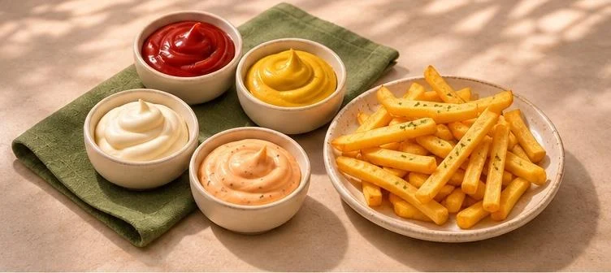
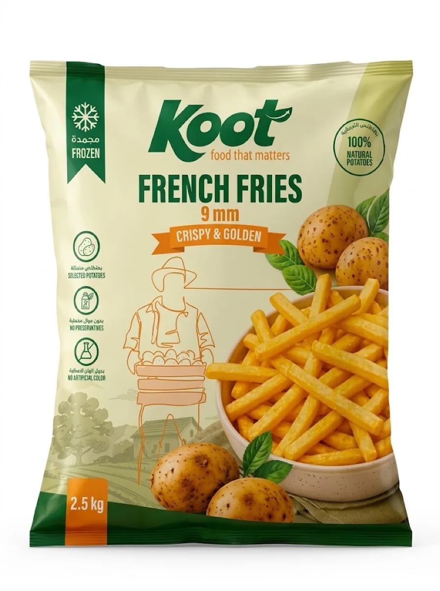

A warm, cinematic showroom.
One strong idea per screen, generous space, and colour that comes from the food. This page defines the colour, type, motion and photography rules the three concept pages follow.
Colour
Green, cream and orange carry the brand. Each category adds one accent taken from its food. The accent tints backgrounds and never replaces the brand colours.
Brand
Category accents
Typography
A soft serif for headlines gives warmth and appetite. A clean sans handles everything practical. Arabic has its own pairing and is laid out right to left.
Golden, crisp and consistent, in the cut your menu needs.
Specifications stay open to every visitor. Forms appear only when someone wants a quotation, a sample or a conversation.
المواصفات متاحة لكل زائر. تظهر النماذج فقط عندما يطلب العميل عرض سعر أو عينة أو محادثة.
Motion
Motion supports the food and never delays the buyer. Every scroll effect has a tap equivalent, and everything respects the reduced-motion setting.
--t-fast · 0.2sRespond
Hover, press and chip states.
--t-med · 0.5sChange
Category switch, tray, menus, crossfades.
--t-slow · 0.9sReveal
Section entrances and the product-to-plate stages.
One easing curve everywhere: cubic-bezier(.2,.7,.1,1). Elements rise 34px and fade in once; nothing replays on scroll back.
Photography
Four shot types cover the whole site. The examples below come from the catalogue; a raw-ingredient photo is still missing.

Pack shot
Straight on, soft top light, transparent background. Same angle and scale for every pack.

Plate, top down
One dish on a cream plate, shot from above. Used in heroes and the category switcher.

Raw ingredient
The ingredient alone on a dark surface. First stage of the product-to-plate story.

Texture close-up
Macro detail that fills the frame: salt on a fry, frost on a strawberry.
Components
Cards use a 28px radius, controls are full pills, and touch targets are at least 44px.
Placeholders to replace.
- Logo. Extracted from the catalogue at 420 px wide. Replace with a vector file.
- Photography. Food photos come from the catalogue at low resolution. Replace with the brief in HANDOFF.md.
- Product data. Cuts, pack sizes, frying times, shelf life and ingredients are sample values.
- Arabic copy. Translations, including the Arabic slogan, need review by a native speaker.
- Farmer illustration. Not yet placed. Planned for section transitions and the Our Story page.